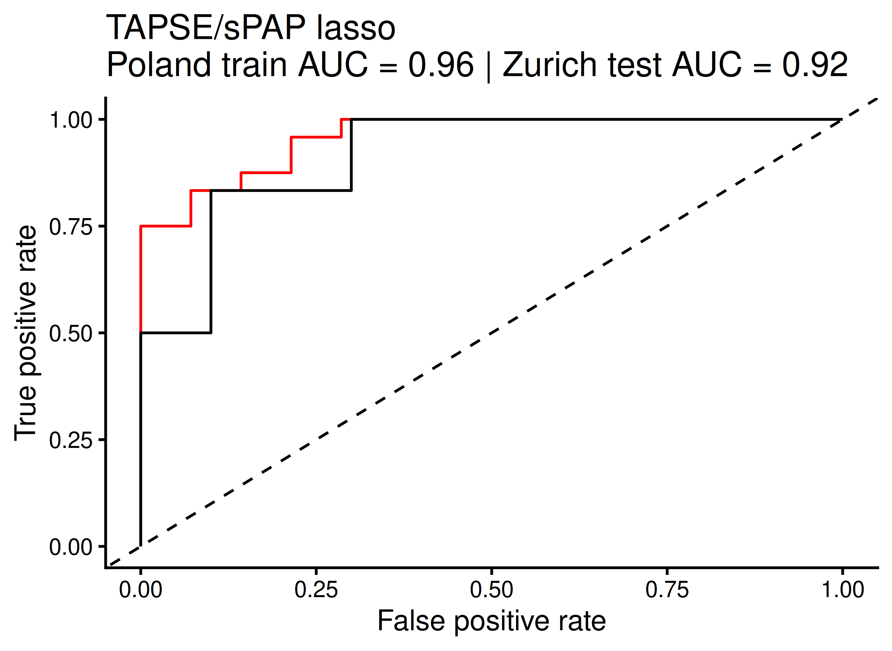
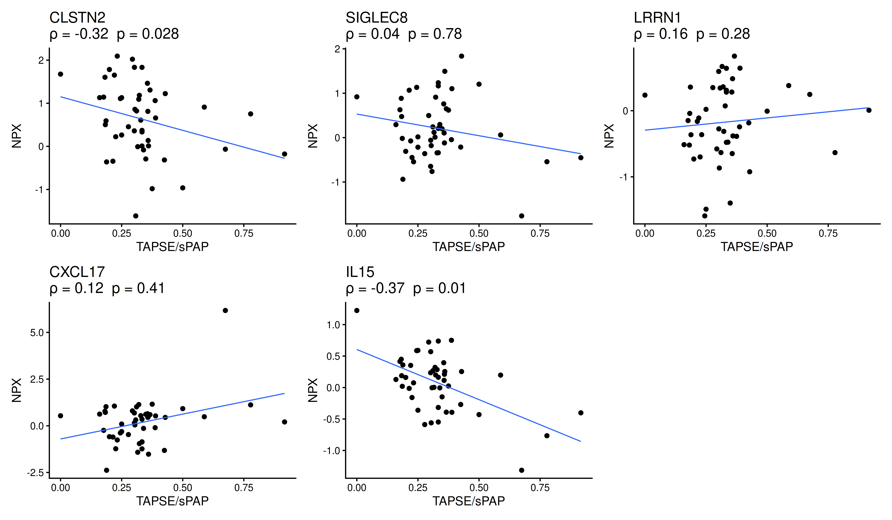
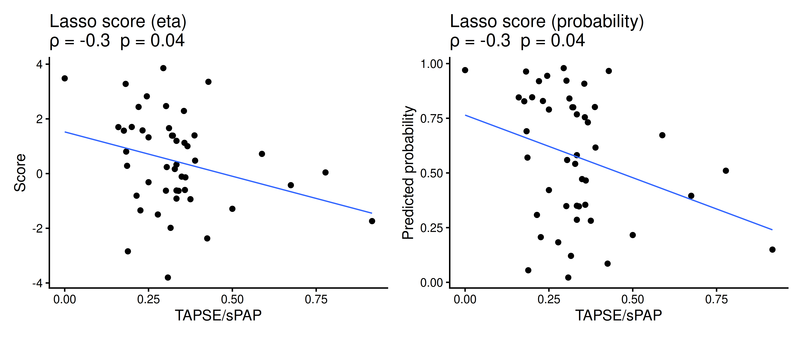
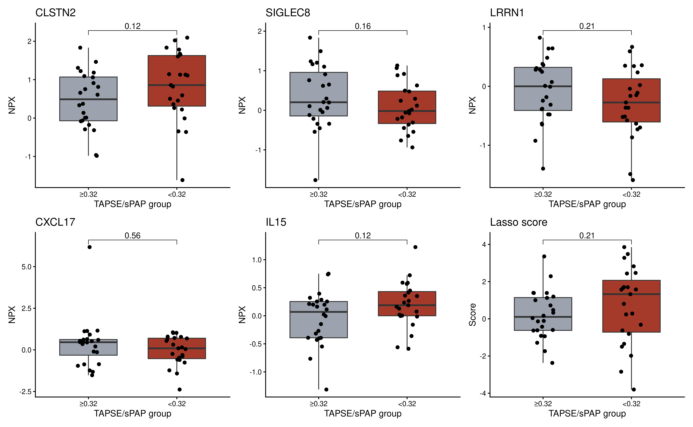
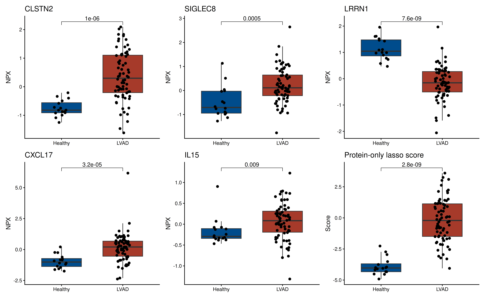
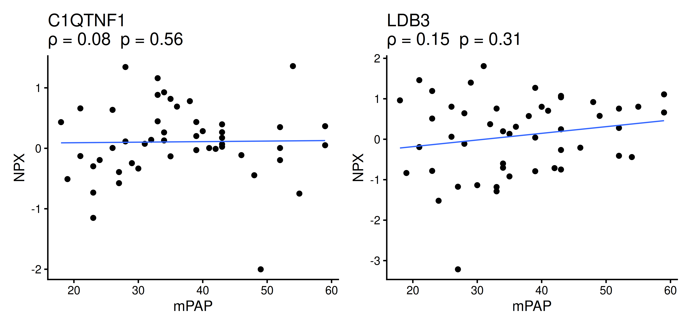
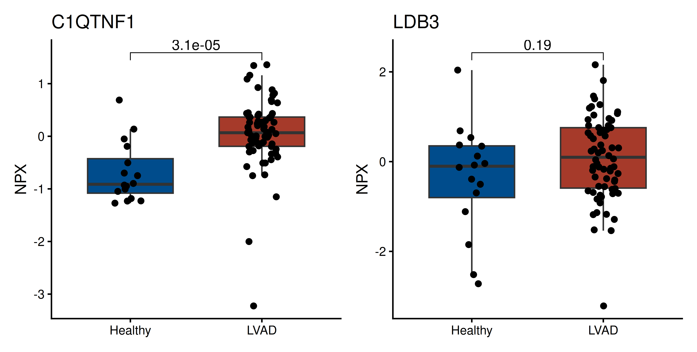
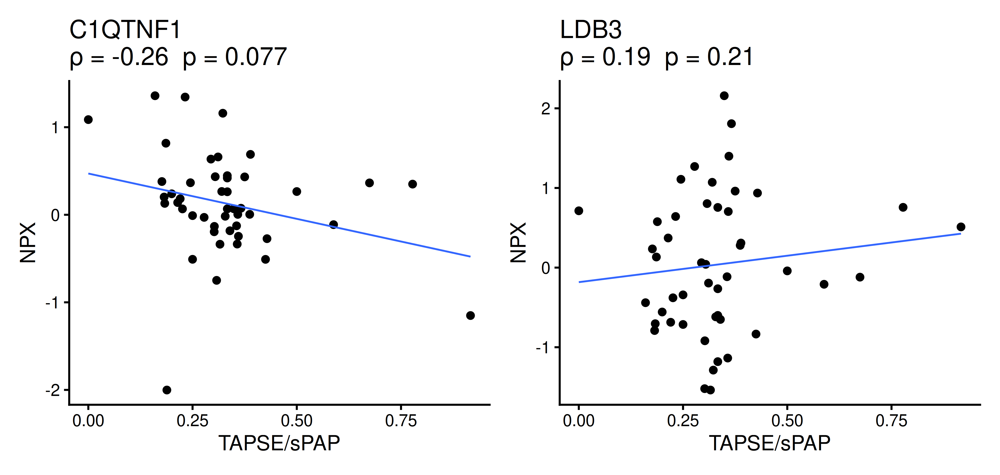
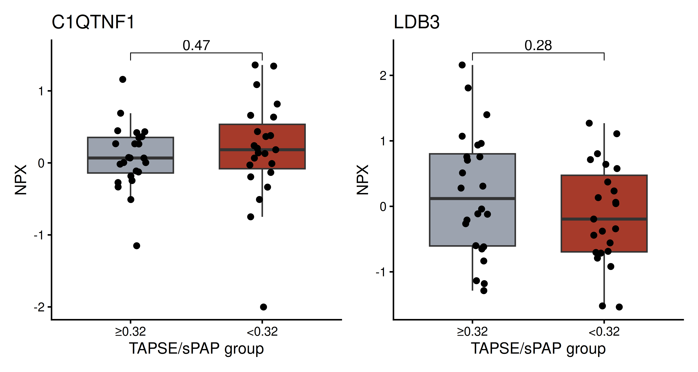

Last updated: 2026-04-09
Checks: 6 1
Knit directory: DCM_snRNAseq/
This reproducible R Markdown analysis was created with workflowr (version 1.7.2). The Checks tab describes the reproducibility checks that were applied when the results were created. The Past versions tab lists the development history.
Great! Since the R Markdown file has been committed to the Git repository, you know the exact version of the code that produced these results.
Great job! The global environment was empty. Objects defined in the global environment can affect the analysis in your R Markdown file in unknown ways. For reproduciblity it’s best to always run the code in an empty environment.
The command set.seed(20240606) was run prior to running
the code in the R Markdown file. Setting a seed ensures that any results
that rely on randomness, e.g. subsampling or permutations, are
reproducible.
Great job! Recording the operating system, R version, and package versions is critical for reproducibility.
Nice! There were no cached chunks for this analysis, so you can be confident that you successfully produced the results during this run.
Using absolute paths to the files within your workflowr project makes it difficult for you and others to run your code on a different machine. Change the absolute path(s) below to the suggested relative path(s) to make your code more reproducible.
| absolute | relative |
|---|---|
| /home/gbonaz/data/DCM_snRNAseq | . |
| /home/gbonaz/data/DCM_snRNAseq/data/OLINK_LVAD | data/OLINK_LVAD |
Great! You are using Git for version control. Tracking code development and connecting the code version to the results is critical for reproducibility.
The results in this page were generated with repository version 257ed12. See the Past versions tab to see a history of the changes made to the R Markdown and HTML files.
Note that you need to be careful to ensure that all relevant files for
the analysis have been committed to Git prior to generating the results
(you can use wflow_publish or
wflow_git_commit). workflowr only checks the R Markdown
file, but you know if there are other scripts or data files that it
depends on. Below is the status of the Git repository when the results
were generated:
Ignored files:
Ignored: .Rhistory
Ignored: .Rproj.user/
Ignored: analysis/figure/
Ignored: output/CellChat/
Ignored: output/Cell_cell_communication_Macrophages/
Ignored: output/Chaffin_2022/
Ignored: output/Comparison_RV_bulk_RNAseq/
Ignored: output/Koenig_2022/
Ignored: output/Mass_Spec_proteomics_2/
Ignored: output/SSc_PAH/
Ignored: output/Variance_partitioning/
Untracked files:
Untracked: .Rprofile
Untracked: Chaffin_wilcox.csv
Untracked: GRCh38-2020-A_build/
Untracked: Koenig_wilcox.csv
Untracked: analysis/Chaffin_2022.Rmd
Untracked: analysis/Check_IMC_panel.Rmd
Untracked: analysis/Comparison_RV_bulk_RNAseq.Rmd
Untracked: analysis/DE_Fibrosis_fibroblasts.Rmd
Untracked: analysis/DE_Group_all_cell_types.Rmd
Untracked: analysis/EC_capillary_angiogenic_boxplot_stats.csv
Untracked: analysis/Endothelial_cells_SGLT2_I.Rmd
Untracked: analysis/Fibroblasts_DA_DE_26.Rmd
Untracked: analysis/Genes_Luxembourg.Rmd
Untracked: analysis/HC_DEGs_clustering.Rmd
Untracked: analysis/Koenig_2022.Rmd
Untracked: analysis/Mass_Spec_RV_dysf.Rmd
Untracked: analysis/Mass_Spec_proteomics.Rmd
Untracked: analysis/Mass_Spec_proteomics_2.Rmd
Untracked: analysis/Olink_RV_dysf.Rmd
Untracked: analysis/Olink_SSc_PAH.Rmd
Untracked: analysis/Olink_SSc_PAH_draft.Rmd
Untracked: analysis/Olink_proteomics.Rmd
Untracked: analysis/Pseudobulk_all.csv
Untracked: analysis/Pseudobulk_all_2.csv
Untracked: analysis/Pseudobulk_byCellType_facetGrid.pdf
Untracked: analysis/Pseudobulk_byCellType_filtered_wrap3col.pdf
Untracked: analysis/Pseudobulk_byCellType_filtered_wrap3col_proportional.pdf
Untracked: analysis/Pseudobulk_byCellType_wilcox.csv
Untracked: analysis/Pseudobulk_byCellType_wilcox.filtered.csv
Untracked: analysis/Pseudobulk_byCellType_wilcox_2.csv
Untracked: analysis/QC_integration_annotation_HC.Rmd
Untracked: analysis/Reichart_ncRNA.Rmd
Untracked: analysis/Reichart_wilcox.csv
Untracked: analysis/Selection_genes_histology.Rmd
Untracked: analysis/TOM/
Untracked: analysis/UntitledR.R
Untracked: analysis/VennDiagram.2024-09-16_14-12-56.160498.log
Untracked: analysis/VennDiagram.2024-09-16_14-13-17.340014.log
Untracked: analysis/VennDiagram.2024-09-16_14-13-57.942673.log
Untracked: analysis/VennDiagram.2024-09-16_14-22-50.621507.log
Untracked: analysis/VennDiagram.2024-09-16_14-24-47.010131.log
Untracked: analysis/VennDiagram.2024-09-18_11-22-29.278827.log
Untracked: analysis/VennDiagram.2025-03-25_17-41-35.50458.log
Untracked: analysis/VennDiagram.2025-03-25_17-41-41.199096.log
Untracked: analysis/VennDiagram.2025-03-25_17-41-59.64245.log
Untracked: analysis/VennDiagram.2025-03-25_17-45-11.922474.log
Untracked: analysis/VennDiagram.2025-03-25_17-50-36.483812.log
Untracked: analysis/VennDiagram.2025-03-25_17-56-46.244322.log
Untracked: analysis/VennDiagram.2025-03-25_17-58-30.74362.log
Untracked: analysis/VennDiagram.2025-03-26_15-54-09.244636.log
Untracked: analysis/VennDiagram.2025-06-11_14-53-30.499963.log
Untracked: analysis/ec_Reichart_logCPM.csv
Untracked: analysis/omnipathr-log/
Untracked: code/Add_metadata.R
Untracked: code/Check DYSF.R
Untracked: code/Clustering_genes.R
Untracked: code/DE_5_percent.Rmd
Untracked: code/DE_5_percent.html
Untracked: code/DE_5_percent/
Untracked: code/DE_CM_test1.R
Untracked: code/DE_no_401.Rmd
Untracked: code/DE_no_401.html
Untracked: code/DE_no_401/
Untracked: code/Differential abundance test1.R
Untracked: code/Differential_Expression_edgeR_All.Rmd
Untracked: code/Differential_Expression_edgeR_All_2.Rmd
Untracked: code/Differential_Expression_edgeR_All_2.html
Untracked: code/Differential_Expression_edgeR_All_Age.Rmd
Untracked: code/Differential_Expression_edgeR_All_Age_2.Rmd
Untracked: code/Differential_Expression_edgeR_All_Age_2.html
Untracked: code/Differential_Expression_edgeR_All_groups.Rmd
Untracked: code/Differential_Expression_edgeR_All_groups.html
Untracked: code/Differential_Expression_edgeR_All_groups_2.Rmd
Untracked: code/Differential_Expression_edgeR_All_groups_2.html
Untracked: code/Differential_Expression_edgeR_All_groups_3.Rmd
Untracked: code/Differential_Expression_edgeR_All_groups_3.html
Untracked: code/Endothelial_cells_cubclustering_removed.Rmd
Untracked: code/PCA and CCA analysis test.R
Untracked: code/Pseudobulk DCM HC.R
Untracked: code/Published_heart_datasets_RV_vs_LV.Rmd
Untracked: code/QC_integration_annotation_orig.Rmd
Untracked: code/Removed_chunks.Rmd
Untracked: code/UpSet_plot_DEGs.Rmd
Untracked: code/Volcano_highlighted_genes.R
Untracked: code/ezInteractiveTable.Rmd
Untracked: code/ezInteractiveTable.html
Untracked: code/old.R
Untracked: data/Cellbender_output/
Untracked: data/Cellranger_output/
Untracked: data/DCM_Clinical_data_22.xlsx
Untracked: data/DCM_Clinical_data_26.xlsx
Untracked: data/DCM_Clinical_data_30.xlsx
Untracked: data/HMEC_RNAseq/
Untracked: data/Heart_datasets/
Untracked: data/Heart_specific_proteome.xlsx
Untracked: data/Homo_sapiens.GRCh38.93.gtf
Untracked: data/Human_plasma_proteome.xlsx
Untracked: data/Mass_spec/
Untracked: data/Massons_quantification.xlsx
Untracked: data/OLINK/
Untracked: data/OLINK_LVAD/
Untracked: data/Published_datasets/
Untracked: data/Raw/
Untracked: data/SSc-PAH/
Untracked: data/gencode.v46.chr_patch_hapl_scaff.annotation.gtf
Untracked: data/gencode.v46.chr_patch_hapl_scaff.basic.annotation.gtf
Untracked: data/refdata-gex-GRCh38-2020-A/
Untracked: omnipathr-log/
Untracked: output/Biomarkers_selection/
Untracked: output/CM_lncRNAs/
Untracked: output/Cardiomyocytes_DA_DE/
Untracked: output/Cardiomyocytes_subclustering/
Untracked: output/Cardiomyocytes_subclustering_26/
Untracked: output/Cell_cell_communication/
Untracked: output/Cell_cell_communication_LV/
Untracked: output/Cell_cell_communication_LV2/
Untracked: output/Cell_cycle/
Untracked: output/Check_IMC_panel/
Untracked: output/Comparison_LV/
Untracked: output/DA_DE_all_cell_types_and_parameters/
Untracked: output/DE_Fibrosis_all_cell_types/
Untracked: output/DE_Fibrosis_fibroblasts/
Untracked: output/DE_Group_all_cell_types/
Untracked: output/DE_all_cell_types_mPAP/
Untracked: output/DE_mPAP_all_cell_types/
Untracked: output/Differential_expression_edgeR_All/
Untracked: output/Differential_expression_edgeR_All_Age/
Untracked: output/Dysferlin/
Untracked: output/Endothelial_cells_Koenig_Reichart/
Untracked: output/Endothelial_cells_SGLT2_I/
Untracked: output/Endothelial_cells_published_datasets/
Untracked: output/Endothelial_cells_subclustering/
Untracked: output/Fibroblasts_DA_DE_26/
Untracked: output/Fibroblasts_subclustering/
Untracked: output/Figures_manuscript/
Untracked: output/Genes_Luxembourg/
Untracked: output/Genes_Luxembourg_2/
Untracked: output/HC_DEGs_clustering/
Untracked: output/HMEC/
Untracked: output/LVAD_OLINK/
Untracked: output/LV_Klaudia/
Untracked: output/LV_datasets_DCM_vs_HC/
Untracked: output/Lymphocytes_subclustering/
Untracked: output/Macrophages_subclustering/
Untracked: output/Mass_Spec_RV_dysf/
Untracked: output/Mass_Spec_proteomics/
Untracked: output/Mural_cells_subclustering/
Untracked: output/Olink_RV_dysf/
Untracked: output/Olink_SSc_PAH/
Untracked: output/Olink_SSc_PAH_draft/
Untracked: output/Olink_proteomics/
Untracked: output/QC_integration_annotation/
Untracked: output/QC_integration_annotation_HC/
Untracked: output/Reichart2022_ventricle_specificity_noncoding/
Untracked: output/Reichart_DE_DCMvsHC/
Untracked: output/Selection_genes_histology/
Untracked: output/UntitledR.R
Untracked: redsfewfref.R
Untracked: reference_sources/
Untracked: renv.lock
Untracked: renv/
Unstaged changes:
Modified: analysis/CM_lncRNAs.Rmd
Modified: analysis/Cardiomyocytes_DA_DE.Rmd
Modified: analysis/Cell_cycle.Rmd
Modified: analysis/Comparison_LV.Rmd
Modified: analysis/DE_Fibrosis_all_cell_types.Rmd
Modified: analysis/DE_mPAP_all_cell_types.Rmd
Deleted: analysis/Differential_Expression_edgeR_All.Rmd
Deleted: analysis/Differential_Expression_edgeR_All_Age.Rmd
Modified: analysis/Endothelial_cells_published_datasets.rmd
Modified: analysis/Endothelial_cells_subclustering.Rmd
Modified: analysis/Figures_manuscript.Rmd
Modified: analysis/HMEC.Rmd
Modified: analysis/LV_Klaudia.Rmd
Modified: analysis/Reichart_DE_DCMvsHC.Rmd
Modified: analysis/SSc_PAH.Rmd
Modified: analysis/_site.yml
Note that any generated files, e.g. HTML, png, CSS, etc., are not included in this status report because it is ok for generated content to have uncommitted changes.
These are the previous versions of the repository in which changes were
made to the R Markdown (analysis/LVAD_OLINK.Rmd) and HTML
(docs/LVAD_OLINK.html) files. If you’ve configured a remote
Git repository (see ?wflow_git_remote), click on the
hyperlinks in the table below to view the files as they were in that
past version.
| File | Version | Author | Date | Message |
|---|---|---|---|---|
| Rmd | 257ed12 | GinoBonazza | 2026-04-09 | wflow_publish("analysis/LVAD_OLINK.Rmd") |
current_file <- "LVAD_OLINK"
library(here)
library(dplyr)
library(tidyr)
library(ggplot2)
library(readr)
library(readxl)
library(qs2)
library(glmnet)
library(ggpubr)
library(patchwork)
library(pROC)
library(scales)
library(tibble)
library(broom)
library(SummarizedExperiment)
output_dir_data <- here::here("output", current_file)
if (!dir.exists(output_dir_data)) dir.create(output_dir_data, recursive = TRUE)
if (!dir.exists(here::here("docs", "figure"))) dir.create(here::here("docs", "figure"), recursive = TRUE)
output_dir_figs <- here::here("docs", "figure", paste0(current_file, ".Rmd"))
if (!dir.exists(output_dir_figs)) dir.create(output_dir_figs, recursive = TRUE)
cols_groups <- c("Healthy" = "#004C8C", "LVAD" = "#A63A2A")
cols_tapse <- c("≥0.32" = "#9CA3AF", "<0.32" = "#A63A2A")
# absolute paths
path_ssc <- "/home/gbonaz/data/SSc-PAH"
path_dcm <- "/home/gbonaz/data/DCM_snRNAseq"
path_lvad <- "/home/gbonaz/data/DCM_snRNAseq/data/OLINK_LVAD"
# candidate proteins
panel_tapse_lasso <- c("CLSTN2", "SIGLEC8", "LRRN1", "CXCL17", "IL15")
panel_mpap <- c("C1QTNF1", "LDB3")
panel_tapse_extra <- c("C1QTNF1", "LDB3")
proteins_to_keep <- unique(c(panel_tapse_lasso, panel_mpap, panel_tapse_extra))npx_raw <- read.delim(
file.path(path_lvad, "pre_quant.csv"),
stringsAsFactors = FALSE,
check.names = FALSE
)
LVAD_clinical <- read.csv(
file.path(path_lvad, "LVAD organ database full.csv"),
stringsAsFactors = FALSE,
check.names = FALSE
)LVAD_clinical_clean <- LVAD_clinical %>%
mutate(across(
.cols = -c(`LVAD no.`, `Data implantacji`, Etiologia),
.fns = ~ case_when(
. == ">60" ~ 60,
. == "" ~ NA_real_,
TRUE ~ suppressWarnings(as.numeric(.))
)
)) %>%
dplyr::rename(
LVAD.no. = `LVAD no.`,
Age = Age,
TAPSE_sPAP = `TAPSE/sPAP`,
mPAP = mPAP
) %>%
dplyr::filter(LVAD.no. != "LV35") %>%
mutate(
TAPSE_group = case_when(
is.na(TAPSE_sPAP) ~ NA_character_,
TAPSE_sPAP < 0.32 ~ "<0.32",
TAPSE_sPAP >= 0.32 ~ "≥0.32"
),
TAPSE_group = factor(TAPSE_group, levels = c("≥0.32", "<0.32")),
Disease_group = "LVAD"
)
glimpse(LVAD_clinical_clean)Rows: 74
Columns: 66
$ LVAD.no. <chr> "LV6", "LV7", "LV8", "LV9", "LV10", "LV11", "LV…
$ `Data implantacji` <chr> "15.03.2023", "15.03.2023", "22.03.2023", "24.0…
$ Storage <dbl> 996, 996, 989, 956, 953, 945, 931, 883, 883, 87…
$ Age <dbl> 66, 42, 40, 46, 46, 68, 63, 63, 58, 45, 61, 62,…
$ BMI <dbl> 21.68, 35.46, 32.70, 20.52, 32.95, 32.00, 28.34…
$ Etiologia <chr> "HCM", "DCM", "ICM", "DCM", "ICM", "ICM", "ICM"…
$ Bilirubin <dbl> 0.93, 2.01, 2.61, 1.07, 1.69, 1.72, 1.17, 1.29,…
$ `HTB index` <dbl> 10.50, 26.00, 31.00, 37.50, 24.50, 14.50, 20.50…
$ Albumin <dbl> 4.1, 4.6, 3.2, 3.7, 4.4, 3.9, 4.3, 3.6, 3.8, 4.…
$ Creatinine <dbl> 1.38, 1.70, 1.27, 1.05, 1.06, 1.81, 1.49, 0.84,…
$ GFR <dbl> 51.6, 52.5, 60.0, 60.0, 60.0, 37.5, 47.6, 60.0,…
$ Hemoglobin <dbl> 13.4, 14.7, 12.0, 11.7, 17.4, 13.5, 14.1, 9.5, …
$ Ferritin <dbl> 1068.00, 103.00, 55.90, 264.00, 188.00, 258.00,…
$ `IIR index` <dbl> 17.3464968, 10.9754098, 0.4757447, 14.4603015, …
$ `IUE index` <dbl> 0.3939700, 1.7411650, 4.0357782, 0.8819318, 1.2…
$ CRP <dbl> 0.510, 1.300, 0.160, 1.090, 0.530, 1.070, 0.170…
$ `Neutr-to-lymph ratio` <dbl> 3.769784, 1.888889, 3.700000, 4.693431, 1.97156…
$ `CRP-Lymphocyte ratio` <dbl> 0.3669065, 0.6018519, 0.2666667, 0.7956204, 0.2…
$ `GCI index` <dbl> 0.11568293, 0.56804348, 0.13050000, 0.31521622,…
$ `GC index` <dbl> 0.22682927, 0.43695652, 0.81562500, 0.28918919,…
$ ASPAT <dbl> 2.0, 23.0, 51.0, 50.0, 27.0, 19.0, 21.0, 21.0, …
$ ALAT <dbl> 19, 29, 11, 25, 22, 10, 20, 34, 15, 31, 13, 31,…
$ TSAT <dbl> 31.40000, 12.20000, 18.80000, 19.90000, 13.2000…
$ neutr <dbl> 5.24, 4.08, 2.22, 6.43, 4.16, 6.05, 4.71, 5.45,…
$ limf <dbl> 1.39, 2.16, 0.60, 1.37, 2.11, 0.63, 1.30, 0.95,…
$ LVEDd <dbl> 61, 94, 72, 75, 82, 65, 83, 67, 77, 89, 72, 67,…
$ LVESd <dbl> 54, 83, 68, 64, 71, NA, 77, 57, 73, 84, 66, 65,…
$ LVVol <dbl> NA, 400, NA, NA, NA, NA, NA, NA, NA, 346, NA, N…
$ `LA (mm)` <dbl> 49, NA, 60, 51, 55, 53, 53, NA, 58, 42, 55, 50,…
$ `LAA (cm2)` <dbl> 34.0, 45.0, 37.0, 32.0, 36.0, 37.0, 40.0, NA, 4…
$ LAVol <dbl> 120, NA, NA, 123, NA, 136, NA, NA, NA, NA, NA, …
$ EF <dbl> 30, 10, 20, 12, 23, 15, 18, 26, 12, 25, 23, 17,…
$ RVIT <dbl> NA, NA, 45, 50, 40, 46, 50, NA, 55, 38, 46, 49,…
$ RVOT <dbl> 29, 54, 52, 46, 39, 45, 39, NA, 42, NA, 40, 45,…
$ TAPSE <dbl> 18, 14, 16, 9, 21, 10, 17, NA, 13, 17, 11, 15, …
$ RVS <dbl> 10.0, NA, NA, 7.0, 11.0, 4.0, 8.0, NA, 6.0, 11.…
$ `sPAP (ECHO)` <dbl> 30, 39, 31, 36, 27, 55, NA, 64, 43, 40, 60, 43,…
$ TAPSE_sPAP <dbl> 0.6000000, 0.3589744, 0.5161290, 0.2500000, 0.7…
$ sPAP <dbl> 54, 68, 64, NA, 81, 56, 70, 92, 44, 32, 53, NA,…
$ dPAP <dbl> 26, 36, 35, NA, 38, 30, 32, 37, 30, 12, 25, NA,…
$ mPAP <dbl> 39, 48, 44, NA, 52, 39, 43, 52, 35, 19, 34, NA,…
$ mPCW <dbl> 44, 33, 34, NA, 25, 26, 26, 46, 26, 11, 17, NA,…
$ TPG <dbl> NA, 15, 10, NA, 27, 13, 17, 6, 9, 8, 17, NA, 6,…
$ mRA <dbl> 19, 17, 22, NA, 17, 18, 11, 67, 15, NA, 9, 6, 1…
$ PulVR <dbl> 0.32, 3.70, 2.30, NA, 9.84, 3.22, 4.90, 2.40, 2…
$ CO <dbl> 2.9, 4.1, 4.3, NA, 2.7, 4.0, 3.5, 2.9, 3.8, NA,…
$ PMI <dbl> 16.020343, 19.720859, NA, 11.340740, 9.356045, …
$ PMD <dbl> 38.42295, 43.20015, NA, 41.19705, 44.88765, 19.…
$ `Cardiac index` <dbl> 1.602210, 1.614173, 1.861472, NA, 1.336634, 1.7…
$ `NT-proBNP-lab` <dbl> 2580.0, 7113.0, 1801.0, 10893.0, 809.0, 5994.0,…
$ `ACE-I` <dbl> 2, 1, 2, 2, 1, 2, 1, 2, 1, 2, 2, 2, 2, 2, 1, 2,…
$ Sartan <dbl> 2, 2, 2, 2, 2, 2, 2, 2, 2, 2, 2, 2, 2, 2, 2, 2,…
$ ARNI <dbl> 1, 2, 1, 2, 2, 1, 2, 2, 2, 1, 2, 2, 1, 1, 2, 1,…
$ `Beta-blocker` <dbl> 1, 1, 1, 1, 1, 1, 1, 1, 1, 1, 1, 1, 1, 1, 1, 1,…
$ MRA <dbl> 1, 1, 1, 1, 1, 1, 1, 1, 1, 1, 1, 1, 1, 1, 1, 1,…
$ `SGLT2-I` <dbl> 1, 1, 1, 1, 1, 1, 1, 1, 2, 1, 1, 1, 1, 1, 1, 1,…
$ Statin <dbl> 1, 2, 1, 2, 1, 1, 1, 1, 2, 1, 1, 1, 1, 1, 1, 1,…
$ Metformin <dbl> 2, 1, 1, 2, 1, 1, 2, 2, 2, 2, 2, 2, 2, 2, 2, 2,…
$ Insulin <dbl> 2, 2, 1, 2, 1, 2, 1, 2, 2, 2, 2, 2, 2, 2, 2, 2,…
$ `Pressor amine` <dbl> 2, 2, 2, 2, 2, 2, 2, 1, 1, 2, 2, 1, 2, 2, 2, 2,…
$ Diabetes <dbl> 1, 1, 1, 2, 1, 2, 1, 2, 1, 2, 2, 2, 2, 2, 2, 2,…
$ Hypertension <dbl> 2, 2, 2, 2, 2, 2, 2, 2, 2, 2, 2, 2, 2, 1, 2, 2,…
$ CAD <dbl> 2, 2, 1, 2, 1, 1, 1, 1, 2, 2, 2, 2, 2, 1, 2, 2,…
$ AF <dbl> 1, 1, 2, 2, 1, 1, 2, 2, 1, 1, 1, 2, 2, 2, 2, 1,…
$ TAPSE_group <fct> ≥0.32, ≥0.32, ≥0.32, <0.32, ≥0.32, <0.32, NA, N…
$ Disease_group <chr> "LVAD", "LVAD", "LVAD", "LVAD", "LVAD", "LVAD",…npx_lvad_all <- npx_raw %>%
filter(SampleType == "SAMPLE") %>%
filter(AssayType == "assay") %>%
filter(AssayQC == "PASS", SampleQC == "PASS") %>%
dplyr::select(SampleID, Group_Name1, Assay, NPX)
npx_lvad_all <- npx_lvad_all %>%
filter(Assay %in% proteins_to_keep)
npx_matrix_all <- npx_lvad_all %>%
tidyr::pivot_wider(
names_from = Assay,
values_from = NPX
)
glimpse(npx_matrix_all)Rows: 86
Columns: 9
$ SampleID <chr> "LV62", "LV41", "LV67", "K18", "LV10", "K21", "LV14", "LV3…
$ Group_Name1 <chr> "LVAD", "LVAD", "LVAD", "Healthy", "LVAD", "Healthy", "LVA…
$ LDB3 <dbl> -0.26536104, -0.20935906, 0.37194905, 2.03919268, 0.756891…
$ LRRN1 <dbl> 0.6407987, 0.3800162, -0.1617030, 1.5169885, -0.6337115, 1…
$ CLSTN2 <dbl> 0.007740526, 0.910457373, -0.345252305, -1.086706161, 0.75…
$ CXCL17 <dbl> -0.86093825, 0.48422936, -0.60416073, -0.23545262, 1.11800…
$ IL15 <dbl> 0.16336286, 0.19765756, -0.01361419, -0.07699909, -0.76577…
$ SIGLEC8 <dbl> 1.23631859, 0.06066199, 1.06790888, -0.75899166, -0.542910…
$ C1QTNF1 <dbl> 0.067282565, -0.112900540, 0.139513671, -1.183346987, 0.34…npx_matrix_lvad <- npx_matrix_all %>%
filter(Group_Name1 == "LVAD") %>%
dplyr::rename(LVAD.no. = SampleID)
lvad_data_full <- LVAD_clinical_clean %>%
inner_join(npx_matrix_lvad, by = "LVAD.no.")
dim(lvad_data_full)[1] 69 74lvad_data_full %>%
dplyr::select(LVAD.no., Age, TAPSE_sPAP, mPAP, all_of(proteins_to_keep)) %>%
head() LVAD.no. Age TAPSE_sPAP mPAP CLSTN2 SIGLEC8 LRRN1 CXCL17
1 LV9 46 0.2500000 NA 0.2627896 -0.21549083 -1.4889734 -0.3103547
2 LV10 46 0.7777778 52 0.7530666 -0.54291004 -0.6337115 1.1180018
3 LV11 68 0.1818182 39 1.6035627 0.88503307 -0.5197452 0.7787494
4 LV12 63 NA 43 0.1394999 0.41139364 -0.1369184 -0.2229311
5 LV13 63 NA 52 -0.4206102 0.95558614 -2.0580437 -0.0387114
6 LV14 58 0.3023256 35 1.8334697 -0.05914981 -0.2746747 0.1523659
IL15 C1QTNF1 LDB3
1 -0.36073765 -0.50854534 -0.3422999
2 -0.76577759 0.34999263 0.7568914
3 0.44967896 0.20250906 -0.7901880
4 -0.06662655 0.02585352 0.2458507
5 0.36200058 -0.19540164 -0.4092967
6 0.56980097 -0.13271704 -0.9189269all_samples_wide <- npx_matrix_all %>%
mutate(
Disease_group = case_when(
Group_Name1 == "LVAD" ~ "LVAD",
Group_Name1 == "Healthy" ~ "Healthy",
TRUE ~ Group_Name1
)
)
all_samples_wide$Disease_group <- factor(all_samples_wide$Disease_group, levels = c("Healthy", "LVAD"))
table(all_samples_wide$Disease_group)
Healthy LVAD
16 70 data_z <- qs_read(file.path(path_ssc, "data", "o37198_2025-02-27_olink_SummarizedExperiment.qs2"))
clin_z <- read_excel(file.path(path_ssc, "data", "Metadata_Olink_analysis.xlsx"))
meta_z <- colData(data_z) %>% data.frame()
isOutlierColumn <- meta_z$Plate == "P0194" & meta_z$Col %in% c("3", "4")
use <- meta_z$SampleType %in% c("Serum") & meta_z$Group %in% c("SSc-PAH", "SSc-noPAH") & !isOutlierColumn
data_z <- data_z[, use]
meta_z <- meta_z[use, ]
rownames(meta_z) <- gsub("_P0194", "", rownames(meta_z))
meta_z$Barcode <- rownames(meta_z)
rownames(data_z) <- data_z@elementMetadata@listData[["Gene"]]
rownames(data_z@assays@data@listData[["npx"]]) <- data_z@elementMetadata@listData[["Gene"]]
data_z <- assay(data_z, "npx")
data_z <- as.data.frame(data_z[-c(1:3), ])
colnames(data_z) <- rownames(meta_z)
clin_z <- clin_z %>%
dplyr::filter(Barcode %in% colnames(data_z)) %>%
mutate(
Age = as.numeric(Age),
TAPSE_sPAP = as.numeric(TAPSE_sPAP),
Sex = factor(Sex)
)
data_p <- read.delim(
file.path(path_ssc, "data", "OLINK_PL", "quant.xls"),
sep = "\t",
check.names = FALSE,
stringsAsFactors = FALSE
)
clin_p <- read_excel(file.path(path_ssc, "data", "OLINK_PL", "Metadata_Olink_PL.xlsx"))
rownames(data_p) <- sub("_.*", "", data_p$SampleID)
data_p <- data_p[, -1]
keep <- intersect(colnames(data_p), clin_p$Barcode)
data_p <- data_p[, keep, drop = FALSE]
clin_p <- clin_p %>%
dplyr::filter(Barcode %in% colnames(data_p)) %>%
mutate(
Age = as.numeric(Age),
TAPSE_sPAP = as.numeric(TAPSE_sPAP),
Sex = factor(Sex)
)cutoff <- 0.32
train_p <- clin_p %>%
dplyr::filter(Group == "SSc-PAH") %>%
dplyr::filter(!is.na(TAPSE_sPAP), !is.na(Age), !is.na(Sex)) %>%
dplyr::filter(Barcode %in% colnames(data_p))
test_z <- clin_z %>%
dplyr::filter(Group == "SSc-PAH") %>%
dplyr::filter(!is.na(TAPSE_sPAP), !is.na(Age), !is.na(Sex)) %>%
dplyr::filter(Barcode %in% colnames(data_z))
y_tr <- ifelse(as.numeric(train_p$TAPSE_sPAP) < cutoff, 1, 0)
y_te <- ifelse(as.numeric(test_z$TAPSE_sPAP) < cutoff, 1, 0)
Xtr_prot <- t(as.matrix(data_p[panel_tapse_lasso, train_p$Barcode, drop = FALSE]))
Xte_prot <- t(as.matrix(data_z[panel_tapse_lasso, test_z$Barcode, drop = FALSE]))
cov_tr <- data.frame(Age = as.numeric(train_p$Age), Sex = factor(train_p$Sex))
cov_te <- data.frame(Age = as.numeric(test_z$Age), Sex = factor(test_z$Sex, levels = levels(cov_tr$Sex)))
Xtr_cov <- model.matrix(~ Age + Sex, data = cov_tr)[, -1, drop = FALSE]
Xte_cov <- model.matrix(~ Age + Sex, data = cov_te)[, -1, drop = FALSE]
Xtr <- cbind(Xtr_cov, Xtr_prot)
Xte <- cbind(Xte_cov, Xte_prot)
pf <- c(rep(0, ncol(Xtr_cov)), rep(1, ncol(Xtr_prot)))
set.seed(1)
cvfit_tapse <- cv.glmnet(
x = Xtr,
y = y_tr,
family = "binomial",
alpha = 1,
penalty.factor = pf,
standardize = TRUE,
nfolds = 5,
type.measure = "auc"
)
lambdas <- cvfit_tapse$glmnet.fit$lambda
beta_mat <- as.matrix(coef(cvfit_tapse$glmnet.fit, s = lambdas))
feat_names <- rownames(beta_mat)
prot_idx <- which(feat_names %in% panel_tapse_lasso)
nprot <- apply(beta_mat[prot_idx, , drop = FALSE] != 0, 2, sum)
ok <- which(nprot >= 3 & nprot <= 10)
if (length(ok) > 0) {
j <- ok[which.min(cvfit_tapse$cvm[match(lambdas[ok], cvfit_tapse$lambda)])]
lambda_use <- lambdas[j]
} else {
j <- which.min(abs(nprot - 5))
lambda_use <- lambdas[j]
}
coef_tapse_lasso <- as.matrix(coef(cvfit_tapse, s = lambda_use))
coef_tapse_lasso <- data.frame(
feature = rownames(coef_tapse_lasso),
coefficient = coef_tapse_lasso[, 1],
row.names = NULL
)
coef_tapse_lasso feature coefficient
1 (Intercept) -1.097288087
2 Age 0.003883338
3 SexM -0.729194030
4 CLSTN2 1.443884661
5 SIGLEC8 0.777310918
6 LRRN1 -0.584267784
7 CXCL17 0.529814239
8 IL15 0.872527914write.csv(
coef_tapse_lasso,
file = here::here(output_dir_data, "coefficients_TAPSE_lasso_Poland_train.csv"),
row.names = FALSE,
quote = FALSE
)train_prob <- as.numeric(predict(cvfit_tapse, newx = Xtr, s = lambda_use, type = "response"))
test_prob <- as.numeric(predict(cvfit_tapse, newx = Xte, s = lambda_use, type = "response"))
roc_tr <- pROC::roc(y_tr, train_prob, quiet = TRUE)
roc_te <- pROC::roc(y_te, test_prob, quiet = TRUE)
auc_tr <- as.numeric(pROC::auc(roc_tr))
auc_te <- as.numeric(pROC::auc(roc_te))
ggplot() +
geom_line(
data = data.frame(tpr = rev(roc_tr$sensitivities), fpr = rev(1 - roc_tr$specificities)),
aes(fpr, tpr),
color = "red"
) +
geom_line(
data = data.frame(tpr = rev(roc_te$sensitivities), fpr = rev(1 - roc_te$specificities)),
aes(fpr, tpr),
color = "black"
) +
geom_abline(linetype = 2) +
labs(
x = "False positive rate",
y = "True positive rate",
title = paste0("TAPSE/sPAP lasso\nPoland train AUC = ", round(auc_tr, 2),
" | Zurich test AUC = ", round(auc_te, 2))
) +
theme_classic(base_size = 12)
# full score: only available in LVAD samples with Age
cov_lvad <- data.frame(
Age = as.numeric(lvad_data_full$Age),
Sex = factor(rep(levels(cov_tr$Sex)[1], nrow(lvad_data_full)), levels = levels(cov_tr$Sex))
)
Xlvad_cov <- model.matrix(~ Age + Sex, data = cov_lvad)[, -1, drop = FALSE]
Xlvad_prot <- as.matrix(lvad_data_full[, panel_tapse_lasso, drop = FALSE])
Xlvad <- cbind(Xlvad_cov, Xlvad_prot)
lvad_data_full$lasso_prob_full <- as.numeric(
predict(cvfit_tapse, newx = Xlvad, s = lambda_use, type = "response")
)
lvad_data_full$lasso_eta_full <- as.numeric(
predict(cvfit_tapse, newx = Xlvad, s = lambda_use, type = "link")
)
# protein-only score: can also be used for HC because clinical data are not available there
coef_tbl <- coef_tapse_lasso %>%
dplyr::filter(feature != "(Intercept)")
intercept_lasso <- coef_tapse_lasso %>%
dplyr::filter(feature == "(Intercept)") %>%
dplyr::pull(coefficient)
protein_coef_tbl <- coef_tbl %>%
dplyr::filter(feature %in% panel_tapse_lasso)
all_samples_score <- all_samples_wide
all_samples_score$lasso_eta_protein_only <- intercept_lasso
for (i in seq_len(nrow(protein_coef_tbl))) {
this_prot <- protein_coef_tbl$feature[i]
this_beta <- protein_coef_tbl$coefficient[i]
all_samples_score$lasso_eta_protein_only <- all_samples_score$lasso_eta_protein_only + all_samples_score[[this_prot]] * this_beta
}
all_samples_score$lasso_prob_protein_only <- plogis(all_samples_score$lasso_eta_protein_only)
lvad_data_full <- lvad_data_full %>%
left_join(
all_samples_score %>%
dplyr::select(SampleID, lasso_eta_protein_only, lasso_prob_protein_only),
by = c("LVAD.no." = "SampleID")
)cor_results_tapse <- data.frame()
for (prot in panel_tapse_lasso) {
df <- lvad_data_full %>%
dplyr::select(LVAD.no., Age, TAPSE_sPAP, all_of(prot)) %>%
dplyr::rename(NPX = all_of(prot)) %>%
dplyr::filter(!is.na(TAPSE_sPAP), !is.na(NPX))
ct <- cor.test(df$NPX, df$TAPSE_sPAP, method = "spearman", exact = FALSE)
fit <- lm(NPX ~ TAPSE_sPAP + Age, data = df)
sm <- summary(fit)
cor_results_tapse <- rbind(
cor_results_tapse,
data.frame(
protein = prot,
n = nrow(df),
spearman_rho = unname(ct$estimate),
spearman_p = ct$p.value,
beta_TAPSE_sPAP_adjAge = sm$coefficients["TAPSE_sPAP", "Estimate"],
p_TAPSE_sPAP_adjAge = sm$coefficients["TAPSE_sPAP", "Pr(>|t|)"],
beta_Age = sm$coefficients["Age", "Estimate"],
p_Age = sm$coefficients["Age", "Pr(>|t|)"],
r_squared = sm$r.squared
)
)
}
cor_results_tapse$FDR_spearman <- p.adjust(cor_results_tapse$spearman_p, method = "BH")
cor_results_tapse$FDR_adjAge <- p.adjust(cor_results_tapse$p_TAPSE_sPAP_adjAge, method = "BH")
cor_results_tapse <- cor_results_tapse %>% arrange(FDR_spearman)
cor_results_tapse protein n spearman_rho spearman_p beta_TAPSE_sPAP_adjAge p_TAPSE_sPAP_adjAge
1 IL15 47 -0.37124434 0.01019551 -1.4102116 0.0001348517
2 CLSTN2 47 -0.32150605 0.02754864 -1.4054911 0.0753353576
3 LRRN1 47 0.16228566 0.27577493 0.3286480 0.5550582696
4 CXCL17 47 0.12336255 0.40873614 2.8891174 0.0125993469
5 SIGLEC8 47 0.04239322 0.77722711 -0.9797175 0.1553345624
beta_Age p_Age r_squared FDR_spearman FDR_adjAge
1 0.0185287014 0.002430131 0.43128800 0.05097755 0.0006742587
2 0.0154242429 0.248303706 0.11233397 0.06887160 0.1255589294
3 -0.0041875665 0.659541061 0.01474967 0.45962488 0.5550582696
4 0.0230255257 0.231420793 0.14367552 0.51092017 0.0314983672
5 -0.0004813786 0.967023724 0.04622988 0.77722711 0.1941682029write.csv(
cor_results_tapse,
file = here::here(output_dir_data, "correlations_TAPSE_candidates_LVAD.csv"),
row.names = FALSE,
quote = FALSE
)plot_list_tapse <- list()
for (prot in panel_tapse_lasso) {
ann <- cor_results_tapse %>% dplyr::filter(protein == prot)
df <- lvad_data_full %>%
dplyr::select(LVAD.no., TAPSE_sPAP, all_of(prot)) %>%
dplyr::rename(NPX = all_of(prot)) %>%
dplyr::filter(!is.na(TAPSE_sPAP), !is.na(NPX))
plot_list_tapse[[prot]] <- ggplot(df, aes(x = TAPSE_sPAP, y = NPX)) +
geom_point() +
geom_smooth(method = "lm", se = FALSE, linewidth = 0.5) +
theme_classic(base_size = 12) +
labs(
title = paste0(
prot,
"\nρ = ", round(ann$spearman_rho, 2),
" p = ", signif(ann$spearman_p, 2)
),
x = "TAPSE/sPAP",
y = "NPX"
)
}
wrap_plots(plot_list_tapse, ncol = 3)
score_results_tapse <- lvad_data_full %>%
dplyr::select(LVAD.no., Age, TAPSE_sPAP, lasso_eta_full, lasso_prob_full, lasso_eta_protein_only, lasso_prob_protein_only) %>%
dplyr::filter(!is.na(TAPSE_sPAP), !is.na(lasso_eta_full))
ct_eta <- cor.test(score_results_tapse$lasso_eta_full, score_results_tapse$TAPSE_sPAP, method = "spearman", exact = FALSE)
fit_eta <- lm(lasso_eta_full ~ TAPSE_sPAP + Age, data = score_results_tapse)
summary(fit_eta)
Call:
lm(formula = lasso_eta_full ~ TAPSE_sPAP + Age, data = score_results_tapse)
Residuals:
Min 1Q Median 3Q Max
-5.0070 -0.9159 0.4164 0.8378 2.6133
Coefficients:
Estimate Std. Error t value Pr(>|t|)
(Intercept) -1.70386 1.58690 -1.074 0.2888
TAPSE_sPAP -2.68268 1.52739 -1.756 0.0860 .
Age 0.05659 0.02610 2.169 0.0356 *
---
Signif. codes: 0 '***' 0.001 '**' 0.01 '*' 0.05 '.' 0.1 ' ' 1
Residual standard error: 1.598 on 44 degrees of freedom
Multiple R-squared: 0.1752, Adjusted R-squared: 0.1377
F-statistic: 4.673 on 2 and 44 DF, p-value: 0.01444p1 <- ggplot(score_results_tapse, aes(x = TAPSE_sPAP, y = lasso_eta_full)) +
geom_point() +
geom_smooth(method = "lm", se = FALSE, linewidth = 0.5) +
theme_classic(base_size = 12) +
labs(
title = paste0("Lasso score (eta)\nρ = ", round(unname(ct_eta$estimate), 2),
" p = ", signif(ct_eta$p.value, 2)),
x = "TAPSE/sPAP",
y = "Score"
)
ct_prob <- cor.test(score_results_tapse$lasso_prob_full, score_results_tapse$TAPSE_sPAP, method = "spearman", exact = FALSE)
p2 <- ggplot(score_results_tapse, aes(x = TAPSE_sPAP, y = lasso_prob_full)) +
geom_point() +
geom_smooth(method = "lm", se = FALSE, linewidth = 0.5) +
theme_classic(base_size = 12) +
labs(
title = paste0("Lasso score (probability)\nρ = ", round(unname(ct_prob$estimate), 2),
" p = ", signif(ct_prob$p.value, 2)),
x = "TAPSE/sPAP",
y = "Predicted probability"
)
p1 + p2
box_list_tapse <- list()
for (prot in panel_tapse_lasso) {
df <- lvad_data_full %>%
dplyr::select(LVAD.no., TAPSE_group, all_of(prot)) %>%
dplyr::rename(NPX = all_of(prot)) %>%
dplyr::filter(!is.na(TAPSE_group), !is.na(NPX))
box_list_tapse[[prot]] <- ggplot(df, aes(x = TAPSE_group, y = NPX, fill = TAPSE_group)) +
geom_boxplot(outlier.shape = NA, width = 0.65) +
geom_jitter(width = 0.12, size = 1.8) +
stat_compare_means(comparisons = list(c("≥0.32", "<0.32")), method = "wilcox.test", label = "p.format") +
scale_fill_manual(values = cols_tapse) +
theme_classic(base_size = 12) +
theme(legend.position = "none") +
labs(title = prot, x = "TAPSE/sPAP group", y = "NPX")
}
box_list_tapse[["Lasso_score"]] <- ggplot(
lvad_data_full %>% dplyr::filter(!is.na(TAPSE_group), !is.na(lasso_eta_full)),
aes(x = TAPSE_group, y = lasso_eta_full, fill = TAPSE_group)
) +
geom_boxplot(outlier.shape = NA, width = 0.65) +
geom_jitter(width = 0.12, size = 1.8) +
stat_compare_means(comparisons = list(c("≥0.32", "<0.32")), method = "wilcox.test", label = "p.format") +
scale_fill_manual(values = cols_tapse) +
theme_classic(base_size = 12) +
theme(legend.position = "none") +
labs(title = "Lasso score", x = "TAPSE/sPAP group", y = "Score")
wrap_plots(box_list_tapse, ncol = 3)
box_list_hc_lvad_tapse <- list()
for (prot in panel_tapse_lasso) {
df <- all_samples_wide %>%
dplyr::select(SampleID, Disease_group, all_of(prot)) %>%
dplyr::rename(NPX = all_of(prot)) %>%
dplyr::filter(Disease_group %in% c("Healthy", "LVAD")) %>%
dplyr::filter(!is.na(Disease_group), !is.na(NPX))
box_list_hc_lvad_tapse[[prot]] <- ggplot(df, aes(x = Disease_group, y = NPX, fill = Disease_group)) +
geom_boxplot(outlier.shape = NA, width = 0.65) +
geom_jitter(width = 0.12, size = 1.8) +
stat_compare_means(comparisons = list(c("Healthy", "LVAD")), method = "wilcox.test", label = "p.format") +
scale_fill_manual(values = cols_groups) +
theme_classic(base_size = 12) +
theme(legend.position = "none") +
labs(title = prot, x = NULL, y = "NPX")
}
box_list_hc_lvad_tapse[["Protein_only_score"]] <- ggplot(
all_samples_score %>%
dplyr::filter(Disease_group %in% c("Healthy", "LVAD"), !is.na(lasso_eta_protein_only)),
aes(x = Disease_group, y = lasso_eta_protein_only, fill = Disease_group)
) +
geom_boxplot(outlier.shape = NA, width = 0.65) +
geom_jitter(width = 0.12, size = 1.8) +
stat_compare_means(comparisons = list(c("Healthy", "LVAD")), method = "wilcox.test", label = "p.format") +
scale_fill_manual(values = cols_groups) +
theme_classic(base_size = 12) +
theme(legend.position = "none") +
labs(title = "Protein-only lasso score", x = NULL, y = "Score")
wrap_plots(box_list_hc_lvad_tapse, ncol = 3)
cor_results_mpap <- data.frame()
for (prot in panel_mpap) {
df <- lvad_data_full %>%
dplyr::select(LVAD.no., Age, mPAP, all_of(prot)) %>%
dplyr::rename(NPX = all_of(prot)) %>%
dplyr::filter(!is.na(mPAP), !is.na(NPX))
ct <- cor.test(df$NPX, df$mPAP, method = "spearman", exact = FALSE)
fit <- lm(NPX ~ mPAP + Age, data = df)
sm <- summary(fit)
cor_results_mpap <- rbind(
cor_results_mpap,
data.frame(
protein = prot,
n = nrow(df),
spearman_rho = unname(ct$estimate),
spearman_p = ct$p.value,
beta_mPAP_adjAge = sm$coefficients["mPAP", "Estimate"],
p_mPAP_adjAge = sm$coefficients["mPAP", "Pr(>|t|)"],
beta_Age = sm$coefficients["Age", "Estimate"],
p_Age = sm$coefficients["Age", "Pr(>|t|)"],
r_squared = sm$r.squared
)
)
}
cor_results_mpap$FDR_spearman <- p.adjust(cor_results_mpap$spearman_p, method = "BH")
cor_results_mpap$FDR_adjAge <- p.adjust(cor_results_mpap$p_mPAP_adjAge, method = "BH")
cor_results_mpap protein n spearman_rho spearman_p beta_mPAP_adjAge p_mPAP_adjAge
1 C1QTNF1 49 0.08499776 0.5614581 0.0003615357 0.9648476
2 LDB3 49 0.14711151 0.3131195 0.0164083171 0.2100216
beta_Age p_Age r_squared FDR_spearman FDR_adjAge
1 -0.011212653 0.2347667 0.03080553 0.5614581 0.9648476
2 -0.001289048 0.9306588 0.03445535 0.5614581 0.4200432write.csv(
cor_results_mpap,
file = here::here(output_dir_data, "correlations_mPAP_candidates_LVAD.csv"),
row.names = FALSE,
quote = FALSE
)plot_list_mpap <- list()
for (prot in panel_mpap) {
ann <- cor_results_mpap %>% dplyr::filter(protein == prot)
df <- lvad_data_full %>%
dplyr::select(LVAD.no., mPAP, all_of(prot)) %>%
dplyr::rename(NPX = all_of(prot)) %>%
dplyr::filter(!is.na(mPAP), !is.na(NPX))
plot_list_mpap[[prot]] <- ggplot(df, aes(x = mPAP, y = NPX)) +
geom_point() +
geom_smooth(method = "lm", se = FALSE, linewidth = 0.5) +
theme_classic(base_size = 12) +
labs(
title = paste0(
prot,
"\nρ = ", round(ann$spearman_rho, 2),
" p = ", signif(ann$spearman_p, 2)
),
x = "mPAP",
y = "NPX"
)
}
plot_list_mpap[[1]] + plot_list_mpap[[2]]
plot_list_mpap_hc <- list()
for (prot in panel_mpap) {
df <- all_samples_wide %>%
dplyr::select(SampleID, Disease_group, all_of(prot)) %>%
dplyr::rename(NPX = all_of(prot)) %>%
dplyr::filter(Disease_group %in% c("Healthy", "LVAD")) %>%
dplyr::filter(!is.na(Disease_group), !is.na(NPX))
plot_list_mpap_hc[[prot]] <- ggplot(df, aes(x = Disease_group, y = NPX, fill = Disease_group)) +
geom_boxplot(outlier.shape = NA, width = 0.65) +
geom_jitter(width = 0.12, size = 1.8) +
stat_compare_means(comparisons = list(c("Healthy", "LVAD")), method = "wilcox.test", label = "p.format") +
scale_fill_manual(values = cols_groups) +
theme_classic(base_size = 12) +
theme(legend.position = "none") +
labs(title = prot, x = NULL, y = "NPX")
}
plot_list_mpap_hc[[1]] + plot_list_mpap_hc[[2]]
write.csv(
lvad_data_full,
file = here::here(output_dir_data, "LVAD_validation_table_with_scores.csv"),
row.names = FALSE,
quote = FALSE
)
write.csv(
all_samples_score,
file = here::here(output_dir_data, "LVAD_and_Healthy_NPX_with_protein_only_score.csv"),
row.names = FALSE,
quote = FALSE
)cor_results_tapse_extra <- data.frame()
for (prot in panel_tapse_extra) {
df <- lvad_data_full %>%
dplyr::select(LVAD.no., Age, TAPSE_sPAP, all_of(prot)) %>%
dplyr::rename(NPX = all_of(prot)) %>%
dplyr::filter(!is.na(TAPSE_sPAP), !is.na(NPX))
ct <- cor.test(df$NPX, df$TAPSE_sPAP, method = "spearman", exact = FALSE)
fit <- lm(NPX ~ TAPSE_sPAP + Age, data = df)
sm <- summary(fit)
cor_results_tapse_extra <- rbind(
cor_results_tapse_extra,
data.frame(
protein = prot,
n = nrow(df),
spearman_rho = unname(ct$estimate),
spearman_p = ct$p.value,
beta_TAPSE_sPAP_adjAge = sm$coefficients["TAPSE_sPAP", "Estimate"],
p_TAPSE_sPAP_adjAge = sm$coefficients["TAPSE_sPAP", "Pr(>|t|)"],
beta_Age = sm$coefficients["Age", "Estimate"],
p_Age = sm$coefficients["Age", "Pr(>|t|)"],
r_squared = sm$r.squared
)
)
}
cor_results_tapse_extra$FDR_spearman <- p.adjust(cor_results_tapse_extra$spearman_p, method = "BH")
cor_results_tapse_extra$FDR_adjAge <- p.adjust(cor_results_tapse_extra$p_TAPSE_sPAP_adjAge, method = "BH")
cor_results_tapse_extra protein n spearman_rho spearman_p beta_TAPSE_sPAP_adjAge p_TAPSE_sPAP_adjAge
1 C1QTNF1 47 -0.2607791 0.07665297 -1.1163492 0.0479863
2 LDB3 47 0.1852462 0.21254071 0.7315074 0.3879531
beta_Age p_Age r_squared FDR_spearman FDR_adjAge
1 -0.008191944 0.3870265 0.09140326 0.1533059 0.09597259
2 0.006802939 0.6373915 0.01939842 0.2125407 0.38795306plot_list_tapse_extra <- list()
for (prot in panel_tapse_extra) {
ann <- cor_results_tapse_extra %>% dplyr::filter(protein == prot)
df <- lvad_data_full %>%
dplyr::select(LVAD.no., TAPSE_sPAP, all_of(prot)) %>%
dplyr::rename(NPX = all_of(prot)) %>%
dplyr::filter(!is.na(TAPSE_sPAP), !is.na(NPX))
plot_list_tapse_extra[[prot]] <- ggplot(df, aes(x = TAPSE_sPAP, y = NPX)) +
geom_point() +
geom_smooth(method = "lm", se = FALSE, linewidth = 0.5) +
theme_classic(base_size = 12) +
labs(
title = paste0(
prot,
"\nρ = ", round(ann$spearman_rho, 2),
" p = ", signif(ann$spearman_p, 2)
),
x = "TAPSE/sPAP",
y = "NPX"
)
}
plot_list_tapse_extra[[1]] + plot_list_tapse_extra[[2]]
plot_list_tapse_group_extra <- list()
for (prot in panel_tapse_extra) {
df <- lvad_data_full %>%
dplyr::select(LVAD.no., TAPSE_group, all_of(prot)) %>%
dplyr::rename(NPX = all_of(prot)) %>%
dplyr::filter(!is.na(TAPSE_group), !is.na(NPX))
plot_list_tapse_group_extra[[prot]] <- ggplot(df, aes(x = TAPSE_group, y = NPX, fill = TAPSE_group)) +
geom_boxplot(outlier.shape = NA, width = 0.65) +
geom_jitter(width = 0.12, size = 1.8) +
stat_compare_means(
comparisons = list(c("≥0.32", "<0.32")),
method = "wilcox.test",
label = "p.format"
) +
scale_fill_manual(values = cols_tapse) +
theme_classic(base_size = 12) +
theme(legend.position = "none") +
labs(title = prot, x = "TAPSE/sPAP group", y = "NPX")
}
plot_list_tapse_group_extra[[1]] + plot_list_tapse_group_extra[[2]]
sessionInfo()R version 4.5.2 (2025-10-31)
Platform: x86_64-pc-linux-gnu
Running under: Ubuntu 24.04.3 LTS
Matrix products: default
BLAS: /usr/lib/x86_64-linux-gnu/openblas-pthread/libblas.so.3
LAPACK: /usr/lib/x86_64-linux-gnu/openblas-pthread/libopenblasp-r0.3.26.so; LAPACK version 3.12.0
locale:
[1] LC_CTYPE=en_US.UTF-8 LC_NUMERIC=C
[3] LC_TIME=en_US.UTF-8 LC_COLLATE=en_US.UTF-8
[5] LC_MONETARY=en_US.UTF-8 LC_MESSAGES=en_US.UTF-8
[7] LC_PAPER=en_US.UTF-8 LC_NAME=C
[9] LC_ADDRESS=C LC_TELEPHONE=C
[11] LC_MEASUREMENT=en_US.UTF-8 LC_IDENTIFICATION=C
time zone: Etc/UTC
tzcode source: system (glibc)
attached base packages:
[1] stats4 stats graphics grDevices datasets utils methods
[8] base
other attached packages:
[1] SummarizedExperiment_1.40.0 Biobase_2.70.0
[3] GenomicRanges_1.62.0 Seqinfo_1.0.0
[5] IRanges_2.44.0 S4Vectors_0.48.0
[7] BiocGenerics_0.56.0 generics_0.1.4
[9] MatrixGenerics_1.22.0 matrixStats_1.5.0
[11] broom_1.0.11 tibble_3.3.0
[13] scales_1.4.0 pROC_1.19.0.1
[15] patchwork_1.3.2 ggpubr_0.6.2
[17] glmnet_4.1-10 Matrix_1.6-5
[19] qs2_0.1.7 readxl_1.4.5
[21] readr_2.1.6 ggplot2_4.0.1
[23] tidyr_1.3.1 dplyr_1.1.4
[25] here_1.0.2
loaded via a namespace (and not attached):
[1] tidyselect_1.2.1 farver_2.1.2 S7_0.2.1
[4] fastmap_1.2.0 promises_1.5.0 stringfish_0.18.0
[7] digest_0.6.39 lifecycle_1.0.4 survival_3.8-3
[10] magrittr_2.0.4 compiler_4.5.2 rlang_1.1.6
[13] sass_0.4.10 tools_4.5.2 yaml_2.3.11
[16] knitr_1.50 ggsignif_0.6.4 labeling_0.4.3
[19] S4Arrays_1.10.1 DelayedArray_0.36.0 RColorBrewer_1.1-3
[22] abind_1.4-8 workflowr_1.7.2 withr_3.0.2
[25] purrr_1.2.0 grid_4.5.2 git2r_0.36.2
[28] iterators_1.0.14 cli_3.6.5 rmarkdown_2.30
[31] otel_0.2.0 RcppParallel_5.1.11-1 rstudioapi_0.17.1
[34] tzdb_0.5.0 cachem_1.1.0 stringr_1.6.0
[37] splines_4.5.2 XVector_0.50.0 BiocManager_1.30.27
[40] cellranger_1.1.0 vctrs_0.6.5 jsonlite_2.0.0
[43] carData_3.0-5 car_3.1-3 hms_1.1.4
[46] rstatix_0.7.3 Formula_1.2-5 foreach_1.5.2
[49] jquerylib_0.1.4 glue_1.8.0 codetools_0.2-20
[52] stringi_1.8.7 shape_1.4.6.1 gtable_0.3.6
[55] later_1.4.4 pillar_1.11.1 htmltools_0.5.9
[58] R6_2.6.1 rprojroot_2.1.1 evaluate_1.0.5
[61] lattice_0.22-7 backports_1.5.0 renv_1.1.5
[64] httpuv_1.6.16 bslib_0.9.0 Rcpp_1.1.0
[67] nlme_3.1-168 SparseArray_1.10.4 mgcv_1.9-3
[70] whisker_0.4.1 xfun_0.56 fs_1.6.6
[73] pkgconfig_2.0.3